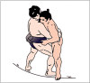

| 名前 萱野 公平 | 担当楽器 As、Ds | |||
| 好きな色 小麦色 | 好きな目 ちょっとたれ目 | |||
| 好きな模様 チェック | 好きな長さ 155cm以下 | |||
| 好きな形 Twin | 好きな言葉 “健康のためなら死んでもいい” | |||
| 一言 | みんなエーデル応援してね。 | |||
| 名前 金原 えみ | 担当 夢見るドラむすめ | |||
| エーデルで失ったもの ５kgの体重と慎ましさ | エーデルで得たもの いっぱいあるの | |||
| たまにはいーじゃん 村田氏との間の平穏 | たまには見たい ムックが大活躍するところ | |||
| 終わりの挨拶 おつかれんこん | 寝る前には おやすみっふぃー | |||
| 一言 | 野望は「生涯ドラむすめ！！」よろしくね♪ | |||
| 名前 豊島 孝幸 | 担当楽器 Tp | |||
| 小動物 | DA PUMP | |||
| B'z | 麻雀 | |||
| セミロング | 小動物系 | |||
| 一言 | ネコっていいよね。 | |||
| 名前 肥田 博隆 | 担当楽器 B | |||
| 右手 C～F | 左手 (ギリギリ)C～G | |||
| 好きなベーシスト ポールチェンバース | 好きな芸能人 最近いない | |||
| きらいなKey D♭、G♭、B | 好きな弦 ジャザーパーマネント | |||
| 一言 | なーんも思いつかんかった。そのうち変えよ。 | |||
|  | 名前 村田 拓馬 | 担当楽器 Tb(少し重量がUPしました) | ||
| はまっているジャズ： west coast,cool | はまっているもの： mx（ver.2.6） | |||
| よく使うソフト（1）： mx（ver.2.6） | よく使うソフト（2）：powerpoint | |||
| 好きなスポーツ：個人競技 | 嫌いな（苦手な）スポーツ： 団体競技 | |||
| 一言 | ただいま夏休みです（自称）2002.7.2現在 | |||